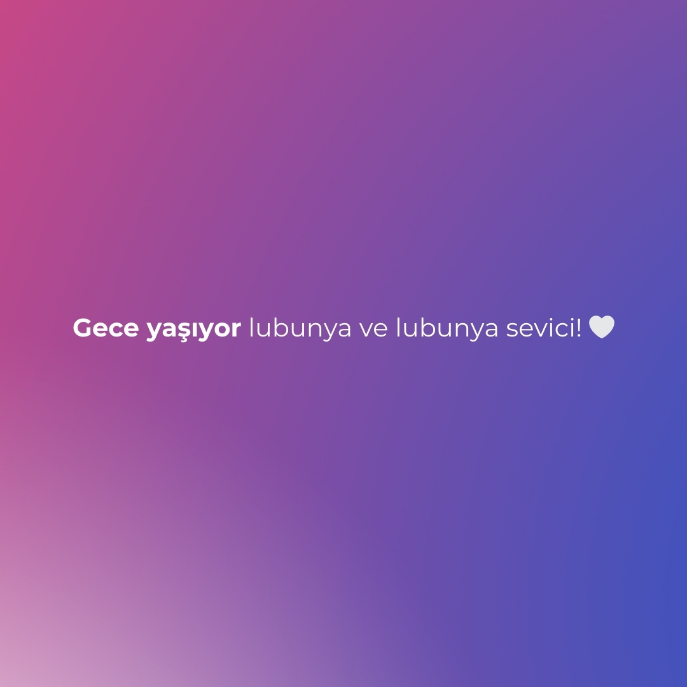
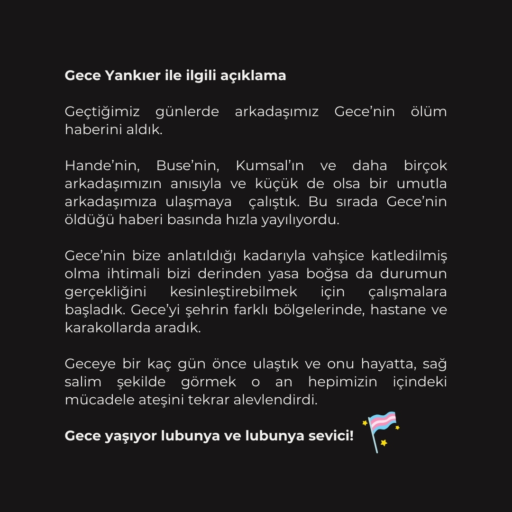

2024-06-30 06:59:00
Gece Yankıer ile ilgili açıklama:
Geçtiğimiz günlerde arkadaşımız gecenin ölüm haberini aldık.
Hande’nin, Buse’nin, Kumsal’ın ve daha birçok arkadaşımızın anısıyla ve küçük de olsa bir umutla arkadaşımıza ulaşmaya çalıştık. Bu sırada Gece’nin öldüğü haberi basında hızla yayılıyordu.
Gece’nin bize anlatıldığı kadarıyla vahşice katledilmiş olma ihtimali bizi derinden yasa boğsa da durumun gerçekliğini kesinleştirebilmek için çalışmalara başladık. Gece’yi şehrin farklı bölgelerinde, hastane ve karakollarda aradık.
Geceye bir kaç gün önce ulaştık ve onu hayatta, sağ salim şekilde görmek o an hepimizin içindeki mücadele ateşini tekrar alevlendirdi.
Gece yaşıyor lubunya ve lubunya sevici 🏳️⚧️🤍

